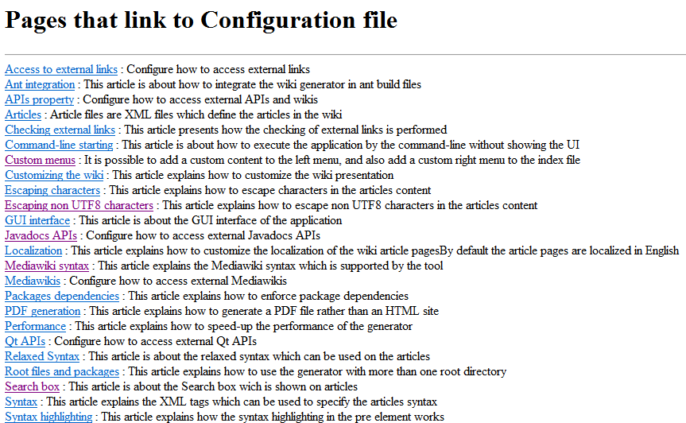
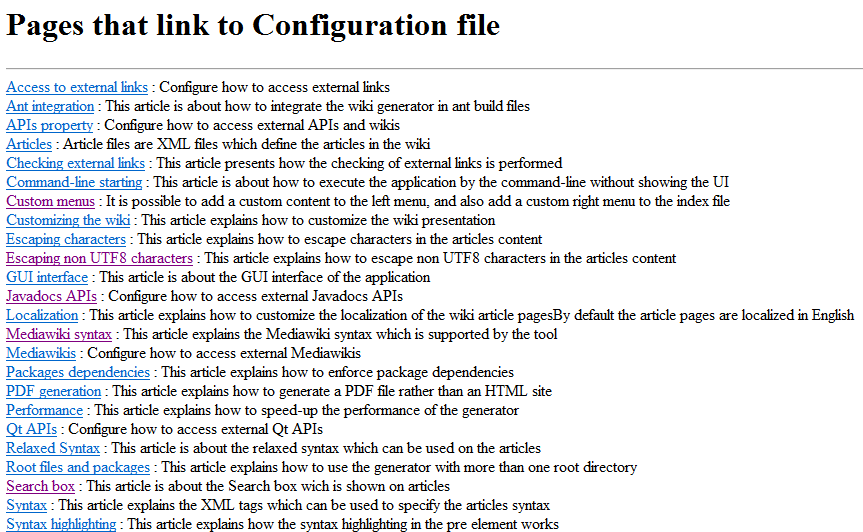

Custom menus
1 Default menu content
1.1 Styling the left menu
2 Adding custom content to the left menu
2.1 Adding custom items to the left menu
2.1.1 Items refering to articles in the wiki
2.1.2 Items refering to the glossary
2.1.3 Items refering to external web pages
2.1.4 The What links here item
2.2 Adding custom content to the left menu
3 Adding a custom right menu
4 Notes
1.1 Styling the left menu
2 Adding custom content to the left menu
2.1 Adding custom items to the left menu
2.1.1 Items refering to articles in the wiki
2.1.2 Items refering to the glossary
2.1.3 Items refering to external web pages
2.1.4 The What links here item
2.2 Adding custom content to the left menu
3 Adding a custom right menu
4 Notes
It is possible to add a custom content to the left menu, and also add a custom right menu to the index file.
The left menu is a Stylable syntax elements, which means that you can set its "class" and "style" elements. For example:
This element has as many "menuItem" children as there are additional menu items in the menu:
The "itemInternalRef" element refer to articles in the wiki. The "id" attribute specifies the article reference as in the ref element in articles.

Note that there won't be any "What links here" page if the associated Menu item is not present.
Default menu content
By default there is no right menu, and the left menu contains:- For the "Home" article ( index): a link to the categories and the dictionnary
- For the "Categories" : a link to the "Home" article and the dictionnary
- For the "Dictionnary" : a link to the "Home" article and the categories
- For any article: a link to the "Home" article, the categories, and the dictionnary. There is also a link to the glossary, if there is a glossary for the wiki
Styling the left menu
Main Article: Stylable syntax elements
The left menu is a Stylable syntax elements, which means that you can set its "class" and "style" elements. For example:
<leftMenu onIndex="true" style="font-size: 10px;"> ...Note that it is possible to style the left menu ithout cusotmizing its content, therefore the following menu specification is valid:
<leftMenu onIndex="true" style="font-size: 10px;"/>
Adding custom content to the left menu
There are two ways to add custom content to the left menus:- By adding new custom items to the menu
- By adding a custom content to the menu
Adding custom items to the left menu
To add custom items to the left menu, you have to define a file with a "leftMenu" top-element. This element has a "onIndex" attribute allowing to define if the menu items will be added to the index article only or to all the articles.This element has as many "menuItem" children as there are additional menu items in the menu:
- The "desc" attribute specifies the text to show in the menu
- The element can have:
- one "itemInternalRef" child for items refering to articles or other interwiki links,
- or one "itemExternalRef" child for items refering to external web pages,
- or one "glossaryRef" child for items refering to the glossary[1]
If there is a glossary,
- or one "linksFromRef" child for the item refering to the "What links here" content for each article
<leftMenu onIndex="true"> <menuItem desc="Website" > <itemExternalRef url="http://sourceforge.net/projects/docjgenerator/" /> </menuItem> <menuItem desc="What links here" > <linksFromRef /> </menuItem> <menuItem desc="License" > <itemInternalRef id="License" /> </menuItem> </leftMenu>
Items refering to articles in the wiki
Main Article: References
The "itemInternalRef" element refer to articles in the wiki. The "id" attribute specifies the article reference as in the ref element in articles.
Items refering to the glossary
The "glossaryRef" element refer to the glossary (if it exists). Note that if there is a glossary but no "glossaryRef" element in the left menu, the glossary will be added automatically at the end of the left menu.Items refering to external web pages
The "itemExternalRef" element refer to external web pages. The "url" attribute specifies the URL of the web page.The What links here item
The "linksFromRef" element refer to a "What links here" page as it exists in wikipedia. For each article, this will give a list of all the other articles which refer to the current article. For example, the "What links here" page for the configuration file page is:
Note that there won't be any "What links here" page if the associated Menu item is not present.
Adding custom content to the left menu
The configuration file allows to specify a file containing the custom HTML content to add at the end of the left menu on the index article.Adding a custom right menu
The configuration file allows to specify a file containing the custom HTML content for the right menu on the index article.Notes
- ^ If there is a glossary
×

Categories: general